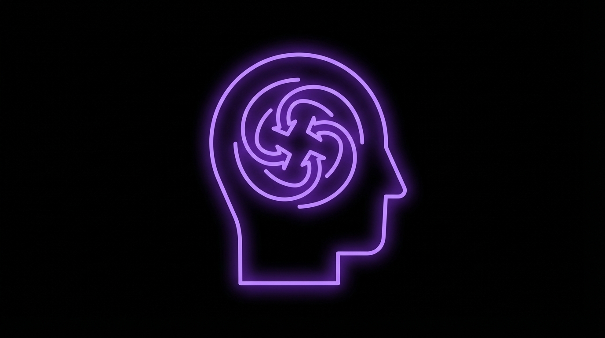
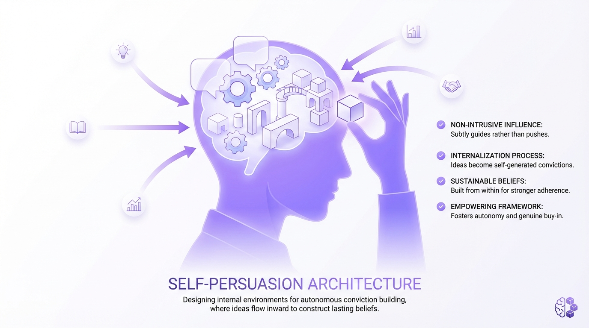
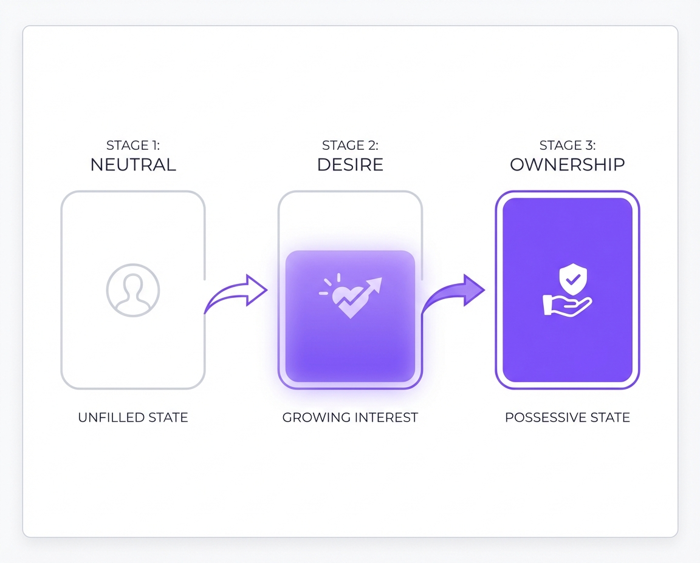

<!DOCTYPE html>
<html lang="en">
<head>
  <meta charset="UTF-8">
  <meta name="viewport" content="width=device-width, initial-scale=1.0">
  <title>Self-Persuasion Architecture</title>
  <script src="https://cdn.tailwindcss.com"></script>
  <script src="https://unpkg.com/react@18/umd/react.production.min.js"></script>
  <script src="https://unpkg.com/react-dom@18/umd/react-dom.production.min.js"></script>
  <script src="https://unpkg.com/@babel/standalone/babel.min.js"></script>
  <script src="https://unpkg.com/framer-motion@10.16.4/dist/framer-motion.js"></script>
  <link href="https://fonts.googleapis.com/css2?family=Inter:wght@300;400;500;600;700;800&display=swap" rel="stylesheet">
  <script>
    tailwind.config = {
      theme: {
        extend: {
          colors: {
            accent: {
              DEFAULT: '#8b5cf6',
              50: '#f5f3ff',
              100: '#ede9fe',
              200: '#ddd6fe',
              300: '#c4b5fd',
              400: '#a78bfa',
              500: '#8b5cf6',
              600: '#7c3aed',
              700: '#6d28d9',
              800: '#5b21b6',
              900: '#4c1d95',
            }
          }
        }
      }
    }
  </script>
  <style>
    * { font-family: 'Inter', -apple-system, BlinkMacSystemFont, sans-serif; }
    body { background: #FFFFFF; color: #1a1a1a; overflow-x: hidden; }
    ::selection { background: #8b5cf6; color: #fff; }
    h1, h2, h3, h4 { letter-spacing: -0.025em; }
    .lesson-container { max-width: 800px; margin: 0 auto; }
  </style>
</head>
<body>
  <div id="root"></div>

  <script type="text/babel">
    const { motion, useInView, AnimatePresence } = window.Motion;
    const { useState, useRef, useEffect } = React;

    const smoothEase = [0.25, 0.4, 0.25, 1];

    // Icons
    const Icons = {
      Users: () => (
        <svg width="20" height="20" viewBox="0 0 24 24" fill="none" stroke="currentColor" strokeWidth="2" strokeLinecap="round" strokeLinejoin="round">
          <path d="M17 21v-2a4 4 0 0 0-4-4H5a4 4 0 0 0-4 4v2"/><circle cx="9" cy="7" r="4"/><path d="M23 21v-2a4 4 0 0 0-3-3.87"/><path d="M16 3.13a4 4 0 0 1 0 7.75"/>
        </svg>
      ),
      Lightbulb: () => (
        <svg width="20" height="20" viewBox="0 0 24 24" fill="none" stroke="currentColor" strokeWidth="2" strokeLinecap="round" strokeLinejoin="round">
          <line x1="9" y1="18" x2="15" y2="18"/><line x1="10" y1="22" x2="14" y2="22"/><path d="M15.09 14c.18-.98.65-1.74 1.41-2.5A4.65 4.65 0 0 0 18 8 6 6 0 0 0 6 8c0 1 .23 2.23 1.5 3.5A4.61 4.61 0 0 1 8.91 14"/>
        </svg>
      ),
      Heart: () => (
        <svg width="20" height="20" viewBox="0 0 24 24" fill="none" stroke="currentColor" strokeWidth="2" strokeLinecap="round" strokeLinejoin="round">
          <path d="M19 14c1.49-1.46 3-3.21 3-5.5A5.5 5.5 0 0 0 16.5 3c-1.76 0-3 .5-4.5 2-1.5-1.5-2.74-2-4.5-2A5.5 5.5 0 0 0 2 8.5c0 2.3 1.5 4.05 3 5.5l7 7Z"/>
        </svg>
      ),
      Compass: () => (
        <svg width="20" height="20" viewBox="0 0 24 24" fill="none" stroke="currentColor" strokeWidth="2" strokeLinecap="round" strokeLinejoin="round">
          <circle cx="12" cy="12" r="10"/><polygon points="16.24 7.76 14.12 14.12 7.76 16.24 9.88 9.88 16.24 7.76"/>
        </svg>
      ),
      Zap: () => (
        <svg width="20" height="20" viewBox="0 0 24 24" fill="none" stroke="currentColor" strokeWidth="2" strokeLinecap="round" strokeLinejoin="round">
          <polygon points="13 2 3 14 12 14 11 22 21 10 12 10 13 2"/>
        </svg>
      ),
      Gift: () => (
        <svg width="20" height="20" viewBox="0 0 24 24" fill="none" stroke="currentColor" strokeWidth="2" strokeLinecap="round" strokeLinejoin="round">
          <polyline points="20 12 20 22 4 22 4 12"/><rect x="2" y="7" width="20" height="5"/><line x1="12" y1="22" x2="12" y2="7"/><path d="M12 7H7.5a2.5 2.5 0 0 1 0-5C11 2 12 7 12 7z"/><path d="M12 7h4.5a2.5 2.5 0 0 0 0-5C13 2 12 7 12 7z"/>
        </svg>
      ),
      Key: () => (
        <svg width="20" height="20" viewBox="0 0 24 24" fill="none" stroke="currentColor" strokeWidth="2" strokeLinecap="round" strokeLinejoin="round">
          <path d="M21 2l-2 2m-7.61 7.61a5.5 5.5 0 1 1-7.778 7.778 5.5 5.5 0 0 1 7.777-7.777zm0 0L15.5 7.5m0 0l3 3L22 7l-3-3m-3.5 3.5L19 4"/>
        </svg>
      ),
      Target: () => (
        <svg width="20" height="20" viewBox="0 0 24 24" fill="none" stroke="currentColor" strokeWidth="2" strokeLinecap="round" strokeLinejoin="round">
          <circle cx="12" cy="12" r="10"/><circle cx="12" cy="12" r="6"/><circle cx="12" cy="12" r="2"/>
        </svg>
      ),
    };

    // Animation components
    function FadeUp({ children, delay = 0, className = "" }) {
      const ref = useRef(null);
      const isInView = useInView(ref, { once: true, margin: "-80px" });
      return (
        <motion.div
          ref={ref}
          className={className}
          initial={{ opacity: 0, y: 40 }}
          animate={isInView ? { opacity: 1, y: 0 } : {}}
          transition={{ duration: 0.7, delay, ease: smoothEase }}
        >
          {children}
        </motion.div>
      );
    }

    function ScaleIn({ children, delay = 0, className = "" }) {
      const ref = useRef(null);
      const isInView = useInView(ref, { once: true, margin: "-50px" });
      return (
        <motion.div
          ref={ref}
          className={className}
          initial={{ opacity: 0, scale: 0.95 }}
          animate={isInView ? { opacity: 1, scale: 1 } : {}}
          transition={{ duration: 0.6, delay, ease: smoothEase }}
        >
          {children}
        </motion.div>
      );
    }

    function Counter({ end, suffix = "", prefix = "" }) {
      const [count, setCount] = useState(0);
      const ref = useRef(null);
      const isInView = useInView(ref, { once: true });

      useEffect(() => {
        if (isInView) {
          let start = 0;
          const duration = 2000;
          const increment = end / (duration / 16);
          const timer = setInterval(() => {
            start += increment;
            if (start >= end) {
              setCount(end);
              clearInterval(timer);
            } else {
              setCount(Math.floor(start));
            }
          }, 16);
          return () => clearInterval(timer);
        }
      }, [isInView, end]);

      return <span ref={ref}>{prefix}{count}{suffix}</span>;
    }

    // Interactive Get vs Keep Demo
    function GetKeepDemo() {
      const [stage, setStage] = useState(0);

      useEffect(() => {
        const timer = setInterval(() => {
          setStage(prev => (prev + 1) % 3);
        }, 3500);
        return () => clearInterval(timer);
      }, []);

      const stages = [
        { title: "Before Reading", desc: "Prospect has no emotional investment", feeling: "Neutral", color: "bg-neutral-200" },
        { title: "During Reading", desc: "They 'try on' the outcome mentally", feeling: "Desire", color: "bg-accent-300" },
        { title: "At CTA", desc: "Purchase prevents loss of the feeling", feeling: "Ownership", color: "bg-accent-500" }
      ];

      return (
        <div className="bg-white rounded-2xl border border-neutral-200 overflow-hidden">
          <div className="p-6">
            <div className="flex justify-between mb-6">
              {stages.map((s, i) => (
                <div key={i} className={`flex-1 text-center ${i < stages.length - 1 ? 'border-r border-neutral-100' : ''}`}>
                  <div className={`mx-auto w-3 h-3 rounded-full mb-2 transition-all ${stage >= i ? stages[i].color : 'bg-neutral-200'}`} />
                  <p className={`text-xs font-medium ${stage === i ? 'text-accent-600' : 'text-neutral-400'}`}>{s.title}</p>
                </div>
              ))}
            </div>
            <motion.div
              key={stage}
              initial={{ opacity: 0, y: 10 }}
              animate={{ opacity: 1, y: 0 }}
              className="text-center py-6 bg-neutral-50 rounded-xl"
            >
              <p className="text-sm text-neutral-500 mb-2">{stages[stage].desc}</p>
              <p className="text-2xl font-bold text-neutral-900">{stages[stage].feeling}</p>
            </motion.div>
          </div>
          <div className="bg-accent-50 p-4 border-t border-accent-100">
            <p className="text-sm text-accent-800 text-center">
              <strong>Key Insight:</strong> By the CTA, they're not paying to GET the feeling—they're paying to KEEP it.
            </p>
          </div>
        </div>
      );
    }

    // Main Lesson Component
    function Lesson() {
      return (
        <div className="bg-white min-h-screen overflow-x-hidden">
          {/* Hero Section - Black with gradient accent */}
          <header className="bg-neutral-950 text-white relative overflow-hidden">
            <div className="absolute top-0 right-0 w-96 h-96 bg-gradient-to-bl from-accent-600/10 to-transparent rounded-full blur-3xl" />
            <div className="absolute bottom-0 left-0 w-64 h-64 bg-gradient-to-tr from-accent-900/20 to-transparent rounded-full blur-2xl" />

            <div className="lesson-container px-6 py-20 relative z-10">
              <FadeUp>
                <div className="flex items-center gap-2 mb-6">
                  <span className="px-3 py-1 bg-accent-600/20 text-accent-400 text-xs font-semibold rounded-full tracking-wide uppercase">
                    Architecture of Belief
                  </span>
                </div>
              </FadeUp>

              <FadeUp delay={0.1}>
                <h1 className="text-4xl font-extrabold mb-4 leading-tight">
                  Self-Persuasion Architecture
                </h1>
              </FadeUp>

              <FadeUp delay={0.2}>
                <p className="text-xl text-neutral-300 mb-8 max-w-2xl leading-relaxed">
                  You can't convince anyone of anything. Learn to build the framework that helps them convince themselves—and discover why they pay to keep feelings, not get them.
                </p>
              </FadeUp>

              <FadeUp delay={0.3}>
                <div className="flex flex-wrap gap-6 text-sm text-neutral-400">
                  <div className="flex items-center gap-2">
                    <Icons.Lightbulb />
                    <span>Paradigm shift</span>
                  </div>
                  <div className="flex items-center gap-2">
                    <Icons.Zap />
                    <span><Counter end={215} suffix="%" /> conversion lift</span>
                  </div>
                </div>
              </FadeUp>
            </div>
          </header>

          {/* Main Content */}
          <main className="px-6 py-12">
            <div className="lesson-container space-y-16">

              {/* The Core Truth */}
              <FadeUp>
                <section>
                  <p className="text-lg text-neutral-700 leading-relaxed">
                    There's a delusion that plagues copywriters: the belief that we can convince someone of something. <strong>We can't.</strong> All we can do is create the conditions for them to convince themselves.
                  </p>
                  <p className="text-lg text-neutral-700 leading-relaxed mt-4">
                    Your job is not to force a belief upon the reader. It is to engineer a story, create a frame, and provide the components that allow their own mind to build the conviction to act. You are an architect of self-persuasion.
                  </p>
                </section>
              </FadeUp>

              {/* Hero Image */}
              <ScaleIn>
                <div className="bg-neutral-950 -mx-6 md:-mx-0 md:rounded-2xl overflow-hidden">
                  
                </div>
              </ScaleIn>


              {/* Hero Image */}
              <ScaleIn>
                <div className="rounded-2xl overflow-hidden bg-neutral-100 max-w-2xl mx-auto">
                  
                </div>
              </ScaleIn>

              {/* The Big Paradigm Shift - Black Section */}
              <FadeUp>
                <section className="bg-neutral-950 rounded-3xl p-8 md:p-10 overflow-hidden relative">
                  <div className="absolute top-0 right-0 w-64 h-64 bg-gradient-to-bl from-accent-600/20 to-transparent rounded-full blur-3xl" />

                  <div className="relative z-10">
                    <div className="flex items-center gap-3 mb-6">
                      <div className="w-10 h-10 rounded-xl bg-gradient-to-br from-accent-400 to-accent-600 flex items-center justify-center text-white">
                        <Icons.Key />
                      </div>
                      <h2 className="text-2xl font-bold text-white">You Don't Sell the Feeling</h2>
                    </div>

                    <p className="text-neutral-300 leading-relaxed mb-6">
                      Here's the paradigm shift that changes everything: <strong className="text-white">You don't sell the feeling. You sell KEEPING the feeling.</strong>
                    </p>

                    <div className="bg-white/5 backdrop-blur rounded-xl p-6 border border-white/10 mb-6">
                      <p className="text-accent-400 italic text-lg">"You're not paying to get the feeling. You're paying to keep the feeling."</p>
                      <p className="text-sm text-neutral-500 mt-3">- Alen Sultanic</p>
                    </div>

                    <p className="text-neutral-300 leading-relaxed">
                      When prospects engage with your sales message, they begin to experience the feeling of the outcome. They mentally "try on" the success, the relief, the transformation. By the time they reach your call to action, the purchase isn't about gaining something new—it's about preventing the loss of what they already feel they have.
                    </p>
                  </div>
                </section>
              </FadeUp>

              {/* Interactive Demo */}
              <FadeUp>
                <section>
                  <h2 className="text-2xl font-bold text-neutral-900 mb-4">The Emotional Journey</h2>
                  <p className="text-neutral-600 mb-6">Watch how emotional ownership develops through your copy.</p>
                  <GetKeepDemo />
                </section>
              </FadeUp>

              {/* How to Build Self-Persuasion */}
              <FadeUp>
                <section>
                  <h2 className="text-2xl font-bold text-neutral-900 mb-6">Building the Self-Persuasion Framework</h2>

                  <p className="text-neutral-600 leading-relaxed mb-6">
                    Self-persuasion isn't passive. You actively construct the environment where conviction naturally forms. Here's how to architect that experience.
                  </p>

                  <div className="grid md:grid-cols-2 gap-6">
                    <div className="p-5 rounded-xl bg-neutral-50 border border-neutral-200">
                      <div className="w-10 h-10 rounded-xl bg-accent-100 flex items-center justify-center text-accent-600 mb-4">
                        <Icons.Compass />
                      </div>
                      <h3 className="font-semibold text-neutral-900 mb-2">Create the Frame</h3>
                      <p className="text-sm text-neutral-600 leading-relaxed">
                        Frame the situation so only one conclusion makes sense. Guide their thinking through strategic context, not pushy claims. Let them "discover" the conclusion themselves.
                      </p>
                    </div>

                    <div className="p-5 rounded-xl bg-neutral-50 border border-neutral-200">
                      <div className="w-10 h-10 rounded-xl bg-accent-100 flex items-center justify-center text-accent-600 mb-4">
                        <Icons.Heart />
                      </div>
                      <h3 className="font-semibold text-neutral-900 mb-2">Trigger Emotional Ownership</h3>
                      <p className="text-sm text-neutral-600 leading-relaxed">
                        Help them vividly imagine already having the outcome. Use future pacing, sensory language, and specific scenarios. Make the transformation feel real before they buy.
                      </p>
                    </div>

                    <div className="p-5 rounded-xl bg-neutral-50 border border-neutral-200">
                      <div className="w-10 h-10 rounded-xl bg-accent-100 flex items-center justify-center text-accent-600 mb-4">
                        <Icons.Users />
                      </div>
                      <h3 className="font-semibold text-neutral-900 mb-2">Provide Social Proof</h3>
                      <p className="text-sm text-neutral-600 leading-relaxed">
                        Show others who made the same decision and succeeded. People don't want to be first—they want to see that the path is safe and proven by people like them.
                      </p>
                    </div>

                    <div className="p-5 rounded-xl bg-neutral-50 border border-neutral-200">
                      <div className="w-10 h-10 rounded-xl bg-accent-100 flex items-center justify-center text-accent-600 mb-4">
                        <Icons.Gift />
                      </div>
                      <h3 className="font-semibold text-neutral-900 mb-2">Make Saying Yes Easy</h3>
                      <p className="text-sm text-neutral-600 leading-relaxed">
                        Remove friction from the decision. Guarantees, bonuses, and risk reversals don't convince—they remove excuses for not following through on a conviction they already have.
                      </p>
                    </div>
                  </div>
                </section>
              </FadeUp>

              {/* Framework Image */}
              <ScaleIn>
                <div className="rounded-2xl overflow-hidden bg-white border border-neutral-100 shadow-sm max-w-xl mx-auto">
                  
                </div>
              </ScaleIn>

              {/* Practical Application - Black Section */}
              <FadeUp>
                <section className="bg-neutral-950 rounded-3xl p-8 md:p-10 overflow-hidden relative">
                  <div className="absolute inset-0 bg-gradient-to-t from-accent-900/10 via-transparent to-transparent" />

                  <div className="relative z-10">
                    <h2 className="text-2xl font-bold text-white mb-6">Techniques for Emotional Ownership</h2>

                    <div className="space-y-4">
                      <div className="bg-white/5 backdrop-blur rounded-xl p-5 border border-white/10">
                        <p className="text-accent-400 font-medium mb-2">Future Pacing</p>
                        <p className="text-sm text-neutral-300">"Imagine 90 days from now, checking your dashboard and seeing..." Transport them to the moment of success so vividly they can taste it.</p>
                      </div>

                      <div className="bg-white/5 backdrop-blur rounded-xl p-5 border border-white/10">
                        <p className="text-accent-400 font-medium mb-2">Sensory Language</p>
                        <p className="text-sm text-neutral-300">"Feel the weight lift off your shoulders as you..." Engage multiple senses to make the imagined outcome more real and memorable.</p>
                      </div>

                      <div className="bg-white/5 backdrop-blur rounded-xl p-5 border border-white/10">
                        <p className="text-accent-400 font-medium mb-2">Identity Statements</p>
                        <p className="text-sm text-neutral-300">"You're the kind of person who..." Help them see themselves as someone who naturally makes this decision. Connect the purchase to who they are.</p>
                      </div>

                      <div className="bg-white/5 backdrop-blur rounded-xl p-5 border border-white/10">
                        <p className="text-accent-400 font-medium mb-2">Loss Framing at CTA</p>
                        <p className="text-sm text-neutral-300">"Don't let this feeling slip away..." At the moment of decision, remind them they already have something to lose—the feeling you've helped them build.</p>
                      </div>
                    </div>
                  </div>
                </section>
              </FadeUp>

              {/* Common Mistakes */}
              <FadeUp>
                <section>
                  <h2 className="text-2xl font-bold text-neutral-900 mb-6">Mistakes That Break Self-Persuasion</h2>

                  <div className="space-y-4">
                    <div className="p-5 rounded-xl bg-neutral-100 border border-neutral-200">
                      <h3 className="font-semibold text-neutral-900 mb-2">Pushing Too Hard</h3>
                      <p className="text-sm text-neutral-600">
                        When you try to force conviction, prospects feel manipulated and resist. The harder you push, the more they push back. Let them arrive at conclusions naturally through the evidence and frame you provide.
                      </p>
                    </div>

                    <div className="p-5 rounded-xl bg-neutral-100 border border-neutral-200">
                      <h3 className="font-semibold text-neutral-900 mb-2">Skipping Emotional Investment</h3>
                      <p className="text-sm text-neutral-600">
                        Jumping straight to features and logic without first building emotional ownership means they have nothing to lose by walking away. Invest time in helping them feel the outcome before asking for action.
                      </p>
                    </div>

                    <div className="p-5 rounded-xl bg-neutral-100 border border-neutral-200">
                      <h3 className="font-semibold text-neutral-900 mb-2">Generic Future Pacing</h3>
                      <p className="text-sm text-neutral-600">
                        Vague promises like "imagine success" don't create ownership. Be specific: exact numbers, precise scenarios, concrete details. The more vivid and detailed, the more real it feels in their mind.
                      </p>
                    </div>

                    <div className="p-5 rounded-xl bg-neutral-100 border border-neutral-200">
                      <h3 className="font-semibold text-neutral-900 mb-2">Misaligned Identity</h3>
                      <p className="text-sm text-neutral-600">
                        If your product doesn't match how they see themselves, no amount of emotional ownership will convert. Understand their self-image first, then show how your offer aligns with who they already believe they are.
                      </p>
                    </div>
                  </div>
                </section>
              </FadeUp>

              {/* Key Takeaways - Black Section */}
              <FadeUp>
                <section className="bg-neutral-950 rounded-3xl p-8 md:p-10">
                  <h2 className="text-2xl font-bold text-white mb-6">Key Takeaways</h2>

                  <div className="grid md:grid-cols-2 gap-4">
                    {[
                      "You can't convince anyone of anything. Your job is to create conditions where they convince themselves through story, frame, and evidence.",
                      "You don't sell the feeling—you sell keeping the feeling. By your CTA, they're protecting emotional ownership, not acquiring something new.",
                      "Build emotional ownership through future pacing, sensory language, and identity connection. Make the outcome feel real before purchase.",
                      "Guarantees and bonuses don't convince—they remove excuses. They help people act on convictions they've already formed."
                    ].map((point, i) => (
                      <div key={i} className="flex gap-3 bg-white/5 rounded-xl p-4 border border-white/10">
                        <div className="w-6 h-6 rounded-full bg-accent-500 flex items-center justify-center flex-shrink-0 mt-0.5">
                          <span className="text-xs font-bold text-white">{i + 1}</span>
                        </div>
                        <p className="text-sm text-neutral-300 leading-relaxed">{point}</p>
                      </div>
                    ))}
                  </div>
                </section>
              </FadeUp>

            </div>
          </main>

          {/* Footer */}
          <footer className="py-10 bg-neutral-50">
            <div className="lesson-container px-6 text-center">
              <p className="text-sm text-neutral-400">Part of the Architecture of Belief Series</p>
            </div>
          </footer>
        </div>
      );
    }

    ReactDOM.createRoot(document.getElementById('root')).render(<Lesson />);
  </script>
</body>
</html>
